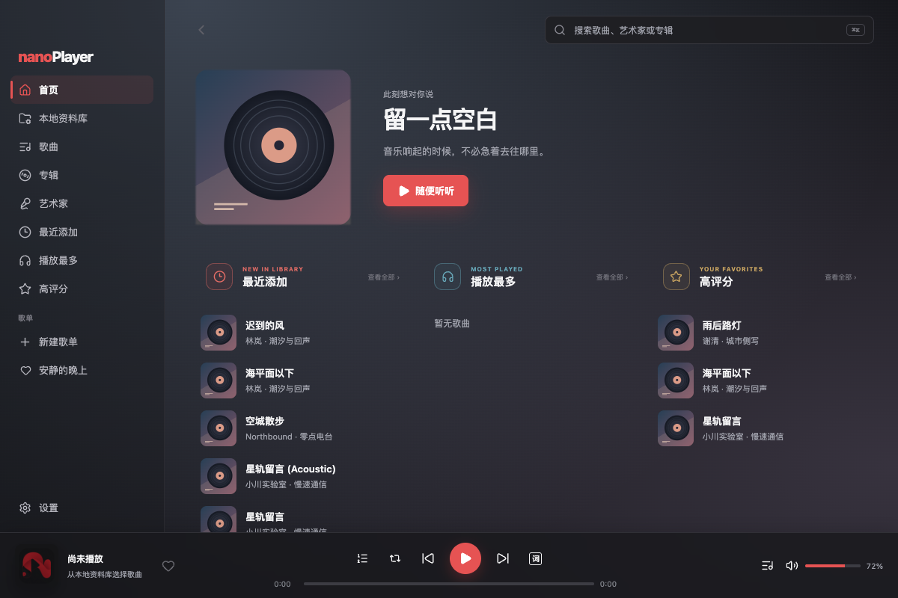
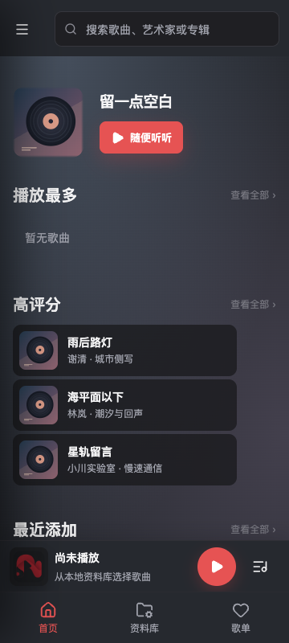

提案重点
一处主要操作，清晰的内容节奏。
固定左侧导航与底部播放区。封面和欢迎语仍然构成首页起点；搜索退到稳定的工具区，列表通过对齐和分隔线组织。
可选变化：最近添加改为专辑封面入口，播放最多与高评分保持歌曲列表。优点是更易浏览专辑，代价是首屏能看到的曲目更少。
若不希望改变首页内容组织，可以只采用字体、对齐和状态标识建议。
在原型中查看 Mac →延续石墨黑与珊瑚红；优化层级、密度与操作体验。独立设计提案，所有变化均由用户选择。
打开三端交互预览 → 完整参考文档 →
现有耐久基线副本；并非本次运行版本截图。固定左侧导航与底部播放区。封面和欢迎语仍然构成首页起点；搜索退到稳定的工具区，列表通过对齐和分隔线组织。
可选变化：最近添加改为专辑封面入口，播放最多与高评分保持歌曲列表。优点是更易浏览专辑，代价是首屏能看到的曲目更少。
若不希望改变首页内容组织，可以只采用字体、对齐和状态标识建议。
在原型中查看 Mac →
历史手机基线 · 不作为当前功能缺陷的证据
保留首页、资料库、歌单三个主入口。列表采用独立播放标识列，封面和曲目不相互挤压；16px标题、44px按钮与72px歌曲行用于触摸阅读。
搜索、更多、队列和设置具有明确的位置。当前歌曲点击后进入展开页，歌词优先阅读，定时入口就近出现。
需用户判断：是否接受更平静的背景表现；现有16%封面染色规则不会被原型自动覆盖。
840px参考画板采用72px图标侧栏，保留桌面导航顺序。多列专辑与单列歌曲根据内容宽度组合，避免整页简单放大。
切换 Android 手机 / Pad 查看 →| 优先评估 | 建议 | 决策要点 |
|---|---|---|
| 第一批 | 字体层级、行对齐、热区、焦点与状态 | 在现有组件中逐项吸收 |
| 第二批 | 专辑聚合入口、设置分组、歌词排版 | 确认内容组织与常用路径 |
| 单独决定 | 覆盖式队列、背景、框架尺寸 | 可能改变已批准的布局规则 |